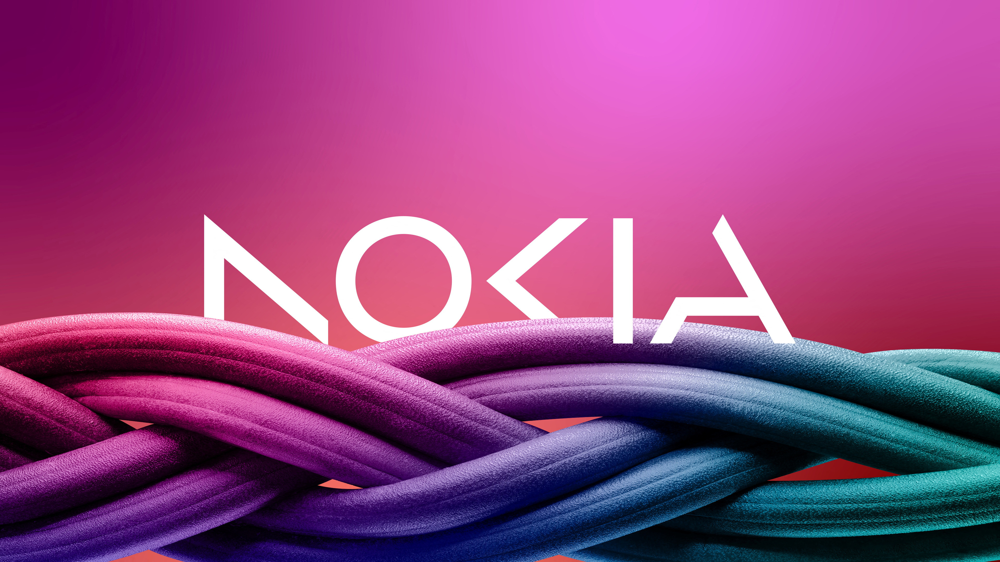
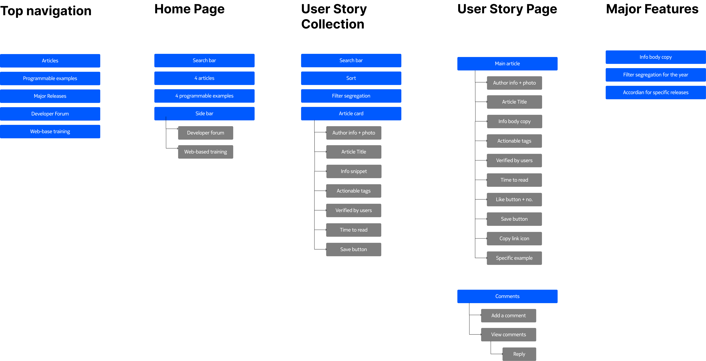
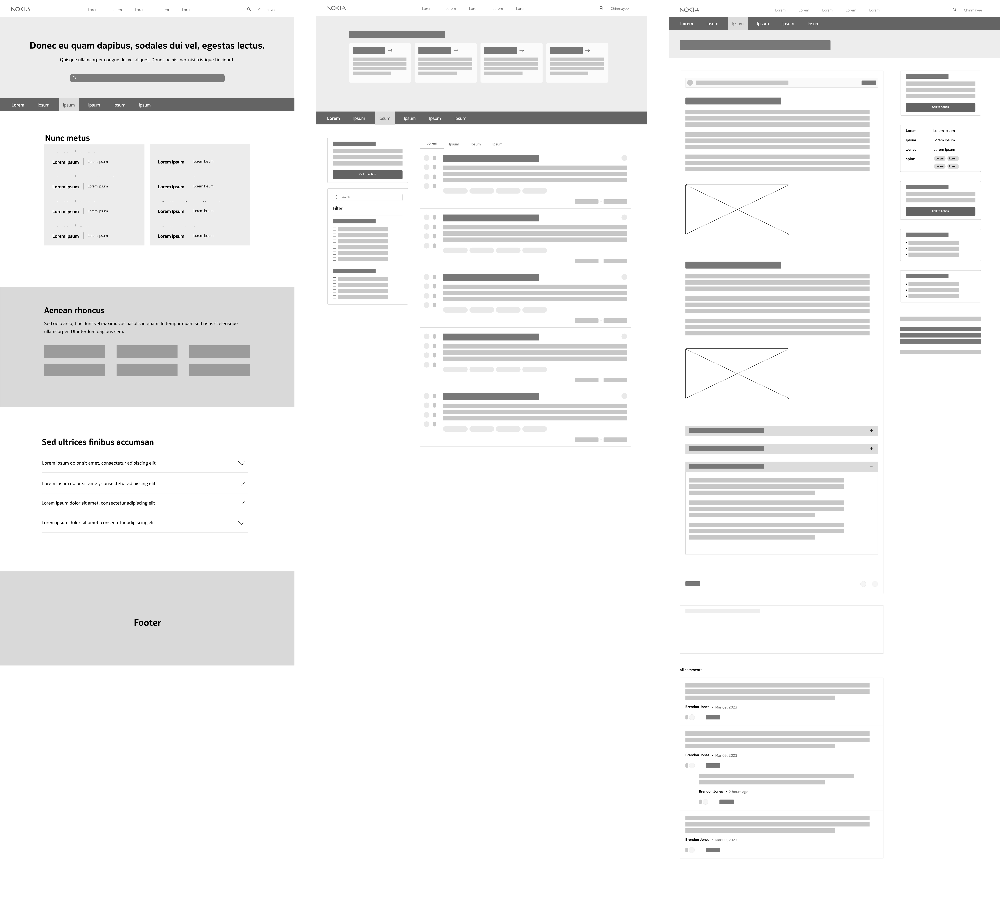

Overview
I led a project to revamp a section of Nokia’a website in line with the company's fresh design standards.
My role involved research, feature ideation, refining the user interface and experience, optimizing content, and crafting
visually engaging designs. The project's goal was to elevate usability, organize information effectively, and maintain
visual consistency, leading to increased productivity and user satisfaction.
This project was about establishing a centralized medium that enables members to contribute and access this
knowledge in an organized and good user experience. By creating such a hub, developers can collaboratively share their insights,
fostering efficient knowledge exchange and cultivating a stronger sense of collaboration.
Challenge
How might we create a dynamic and interactive community space on one of Nokia's websites to enhance
collaboration and engagement among developers?
Research
During the research phase, I focused on enhancing user engagement and collaboration through a comprehensive analysis
of design dimensions. This involved understanding the core problem by conversing with developers, content heads, and product managers.
To tailor the platform for developers, I delved into their specific needs, giving priority to functionality over aesthetics. This
represented a shift from my usual work and required thorough research on developer-focused design.
Next, I initiated an inspirational journey, curating design elements and interactive features aligned with project
objectives. This collection became a crucial reference for the upcoming design phase. I also closely examined Nokia's websites,
dissecting color schemes, typography, iconography, and imagery to understand their impact on user experience. These insights guided
the project's design direction.
In summary, my research process involved understanding the problem landscape, focusing on developers' needs, curating
design inspiration, and evaluating Nokia's visual aesthetics. This comprehensive approach laid a solid foundation for subsequent design
efforts.
Information Architechture
Subsequently, I delved into the realm of Information Architecture, aiming to establish a foundational structure for the entire platform, with a
particular focus on delineating the specifics of the new feature. This strategic approach enabled me to engage in experimentation and
exploration, granting me the opportunity to manipulate various elements that could potentially be incorporated.

Wire framing
Wire framing played a pivotal role in advancing the project, emerging as one of its most critical phases. This stage
marked a significant transition, as it transformed abstract concepts into tangible visual representations. These wireframes became the
blueprint that guided the subsequent design and development processes. The wireframes underwent thorough scrutiny from an extended team
comprising UX experts, developers, and Product Lifecycle Managers (PLMs). This diverse input brought fresh perspectives to the table and
provided invaluable insights for further refinement. The collaborative nature of this evaluation fostered a holistic understanding of the
feature's potential and limitations.
Feedback from the UX team ensured that the user journey was intuitive and logical, enhancing overall user experience.
Developers contributed their technical insights, ensuring that the proposed designs were feasible and aligned with the platform's
capabilities. PLMs provided valuable input from a strategic standpoint, ensuring that the feature aligned with the broader goals and
objectives of the project. Wire framing also facilitated ideation. As the team collectively examined the wireframes, innovative ideas emerged,
leading to potential enhancements and optimizations. These discussions sparked creative solutions that might not have been apparent
at earlier stages.
Incorporating this feedback-driven wire framing process not only fortified the feature's design but also cultivated a
sense of ownership and collaboration among team members. As the wireframes evolved, they became a tangible representation of the shared
vision, serving as a point of reference and alignment for the entire team. In summary, wire framing served as a bridge between conceptualization
and realization, shaping the feature's form and function while fostering a collaborative and iterative approach to design and development.

Design Decisions
1. Two column layout-
To start, the web page had a clear two-column setup that helped make the content balanced and the overall web page easier to use. This layout provides
users with an organized and easy-to-understand design that suits how they look for information, making their tasks quicker. One major reason for
this change was to create a clear hierarchy and spotlight important parts, guiding users to what matters most. Another reason was to give
flexibility to future designers so they can arrange content freely without being tied to a basic layout.
2. Cards for enhanced content division-
The second design decision centred around crafting cards that offer ample whitespace and encompass all the necessary information crucial for developers.
Rather than placing two cards in a single row, I opted for a layout where each row features just one card. This strategy was chosen to provide
developers with a clear and uncluttered visual experience, ensuring that they can readily access all the essential details they require.
3. Tri-fold searching approach-
This approach was implemented to facilitate precise content discovery. Firstly, an adjacent search bar was integrated, complemented by filtering
alternatives, and finally, sorting options positioned at the top. This combination of searching tools works better for finding content compared
to just using a search bar. It's also a widely recognized and commonly used technique in the industry for efficient content searching, therefore
it is a more intuitive method, making the website easy to use.
What Did I Learn?
1. Collaboration in a large team-
I gained insight into the design process in a large company like Nokia. This experience equipped me with the ability to engage in productive teamwork,
effectively assimilating constructive input from various individuals and integrating it into my design work.
2. Negotiation-
I honed my negotiation skills, delving into the intricacies of my designs, estimating implementation timelines for release schedules.
3. Communication-
I refined my communication proficiency, adeptly conveying concepts by incorporating detailed annotations, thereby minimizing any potential ambiguity for
my target audience during presentations.